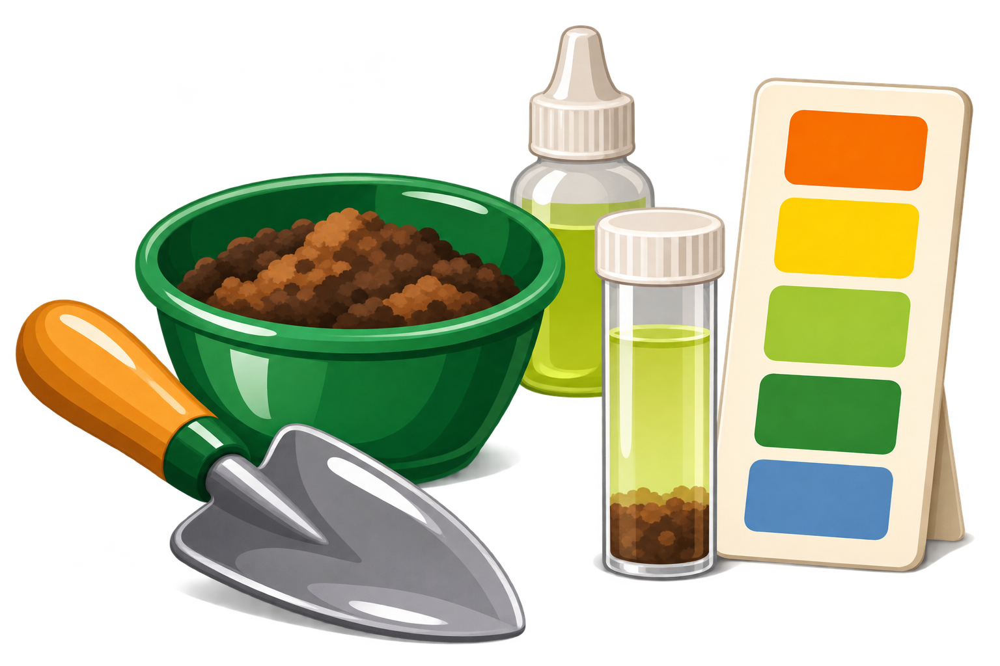
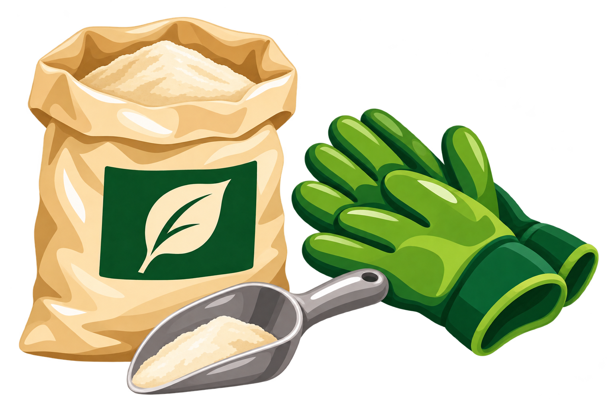

Growing Techniques — Organic growing
Organic growingTesting and adjusting pH
Soil pH tells us how acid or alkaline the ground is: below 7 is acid, 7 is neutral and above 7 is alkaline. Most vegetables grow well around pH 6–7. If your crops are doing well, there is no need to keep adjusting it.
Testing your soil
Check a new plot, or a bed where growth is persistently poor. I have had mixed results with bought kits, so repeat a doubtful reading before acting.
Mix small soil samples from several places in one bed, taken below the mulch. Test a problem patch separately. Follow the kit’s sampling depth, quantities and waiting time, then use its own colour chart.

Wait at least three months after adding lime, fertiliser or organic matter before testing.
Adding lime — only if needed
Garden lime is ground limestone (calcium carbonate). It raises pH, making acid soil less acid. Use it only when testing shows a need; it is not an annual treatment.
Measure the bed and use the packet’s rate for your soil and pH. Apply evenly in autumn or winter, following its handling advice. Keep lime separate from manure and fertiliser, wear gloves and avoid breathing the dust. A surface dressing on a no-dig bed works more slowly.

Avoid liming just before potatoes: it can encourage common scab. For brassicas, correcting acid soil can reduce clubroot damage, but cannot cure it.
Sources: RHS, soil pH and liming; Garden Organic; Soil Association.